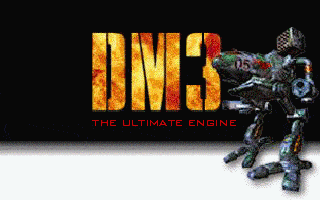

Engine for creating and viewing interactive hypertext/media documents,
diskmags etc. Minimal hardware requirements (386, VGA).
Smooth scrolling in text/graphics, music, effects, interaction,
pictures/animations/objects on pages between text, editor, intelligent compiler
and linker, built-in programming language.
Native support for Windows and DOS, ready for emulators.
Built on RAIN and CIA libraries.
Free for non commercial projects.
- 2015-11-10: source code moved to GitHub
- 2005-11-23: added Archive Pareniste-Realtime CD2 (issues 38-60) for download, all images are compressed
- 2005-10-01: added Archive Pareniste-Realtime CD3 (issues 61-80) for download
- 2004-09-28: added Archive Pareniste-Realtime CD1 (issues 1-37) for download
- 2004-09-28: added Realtime 79 for download
- 2003-10-08: added full source code
-
GeForce owners, update your graphics driver from nvidia.com.
With old driver, you may get black screen in resolutions higher than 640x480.
Workarounds for old driver: you may run "dm.com xlt800" ("dm ?" for more options)
or boot from CD and run Machina in DOS.
- Archive Pařeniště-Realtime, issues 1-37, 1994-1998 (ISO 408MB, contains Machina, autorun, is bootable!)
- Archive Pařeniště-Realtime, issues 38-60, 1998-2000 (ISO 568MB, contains Machina, autorun, is bootable!)
- Archive Pařeniště-Realtime, issues 61-80, 2000-2002 (ISO 454MB, contains Machina, autorun, is bootable!)
- Realtime 79, 2002 (RAR 18MB) as demo project, requires Machina to be installed
- Deus ex Machina [ source code ] 3.52+
- Deus ex Machina 3.52
- Deus ex Machina 2.40
- historical version (sep-1999)
- Parlan, SVGA 8-32bit, last to use MIDAS 0.40 instead of RAIN
- download (RAR 1.2MB)
- Deus ex Machina 1.34
- historical version (jan-1998)
- SVGA, last to run in 256 colors
- download (RAR 0.8MB)
- Deus ex Machina 0.44
- historical version (jan-1996)
- only for DOS and VGA, last written in real mode
- download (RAR 0.2MB)
Projects known to run on Machina.
- Realtime - diskmag, 1999-2002
- Pařeniště - diskmag 1994-1998 on Machina, migrated to web
- Runtime Error - diskmag, migrated to web
- Disc-Specter - diskmag
- CheckPoint - diskmag
- Mission - diskmag
- CAMP - diskmag
- Culture Image - diskmag
- Kecy - diskmag
- Elbereth - diskmag
- encyclopedy of Czech caves
 česky
česky{kind=link}